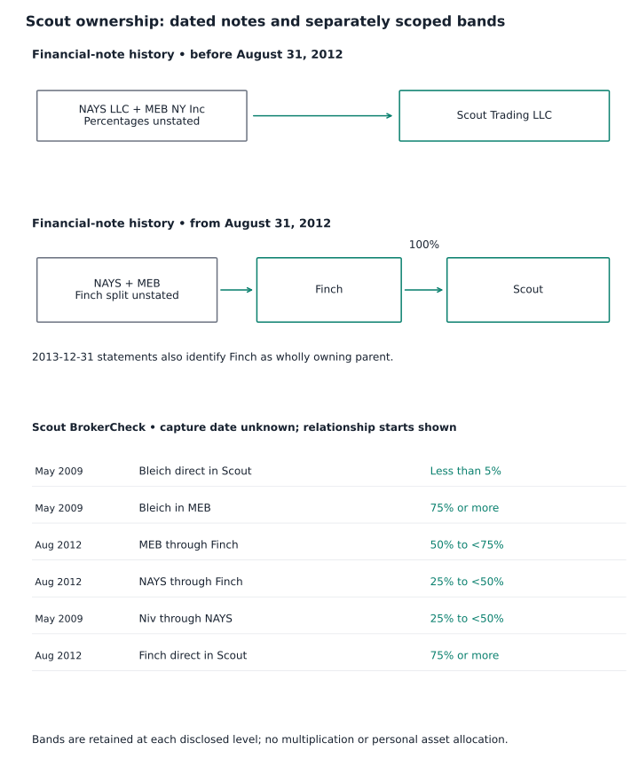
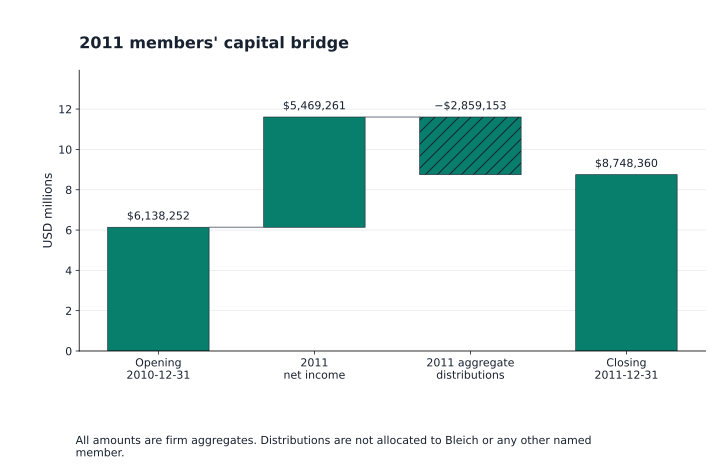
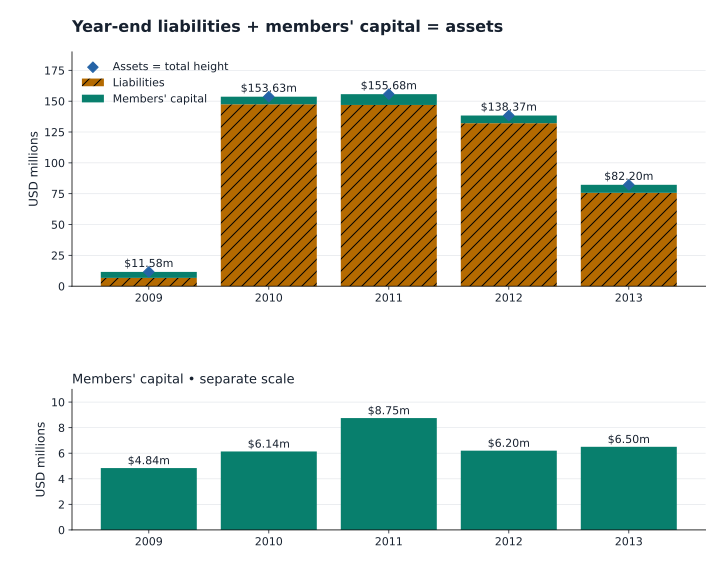
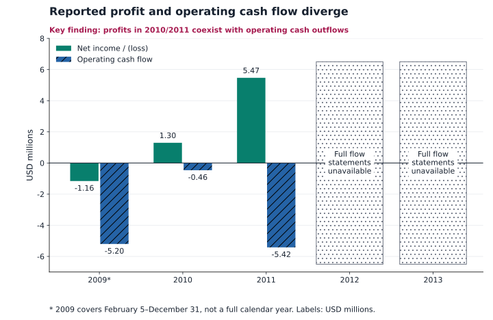

Scout Trading and Michael Edward Bleich
Contents
Supplied-files diligence dossier • historical evidence, with source-specific limits
Executive findings
The strongest adverse evidence is a firm regulatory settlement. Nasdaq accepted AWC 20100243866-01 on April 7, 2015 against Scout Trading, LLC, CRD 151990. Scout consented, without admitting or denying the findings and without adjudication, to findings concerning Regulation SHO Rule 204 and supervision, a censure, and a $3,000,000 fine. Michael Bleich signed as Managing Member for Scout; the supplied order does not name him as an individual respondent. The fine and payment election establish a sanction and an intended payment method, not collection, completion, a current debt balance or a personal fine. Matter, representative capacity, fine finding.
A substantial historical management and ownership connection is documented, but percentages remain bands. BrokerCheck identifies Michael Edward Bleich, CRD 4262671, as Scout CEO and Managing Member from May 2009. Finch is reported as Scout's wholly owning parent; the indirect entries involve MEB NY Inc and NAYS LLC. These records support historical control and layered interests, without allocating firm assets, profits, distributions or unnamed-member balances to Bleich. Role, reorganization, indirect band, allocation limit.
The financial reconstruction is a firm-level record, not a personal wealth estimate. All five supplied 2009–2013 balance sheets reconcile at reported dollar precision. Gross assets were $155,680,893 at December 31, 2011 and $82,198,774 at December 31, 2013; members' capital was $8,748,360 and $6,501,113 respectively. Available 2010 and 2011 operations report profits while operating cash flow is negative. The missing 2012/2013 flow statements prevent reconstruction of annual profit, distributions and complete debt or cash movements. Balance tests, 2011 source, 2013 source, cash finding, coverage gap.


Secondary material requires separate treatment. The supplied advocacy report and research note contain biographical, later-career, offshore, litigation and disclosure theories. Their presence is evidence of what those authors asserted; it does not establish the alleged misconduct or current employment. The mixed records prof-secondary-current-role and prof-regulatory-litigation-unresolved are deferred scope boundaries only and supply no combined finding here.
Basis and reading guide
The Scout source set contains 20 supplied occurrences and 18 unique documents: the Scout archive's 19 occurrences/17 unique documents plus the standalone composite Nasdaq PDF. Two pairs of byte-identical .paper files account for duplicate occurrences; overlapping complaint and AWC copies are retained as separate documents but are not independent events. This dossier uses the accepted profile and financial records, including 17 Scout financial findings and 104 Scout calculations; the linked record catalog supplies full operands, qualifications and provenance. The paper placeholders are explicitly not the underlying reports, second placeholder; the composite's classification preserves its actual contents.
Evidence should be read in this order: original supplied page; its attributed source record; the accepted finding or calculation; then this synthesis. “Reconciled” means an arithmetic comparison at source precision. High confidence in a transcription or scoped characterization does not independently authenticate a transaction or establish every source allegation. Financial scope, repayment limits.
| Supplied source group | What it supplies and where to start |
|---|---|
Full inception-period report, filename Annual Report 2010 Remarks.pdf |
Actually February 5–December 31, 2009; statement, operations, capital, cash. |
Annual Report 2009.pdf |
Separate financial-condition copy; do not treat it as another year. Document. |
Annual Report 2010.pdf |
2010 balance sheet, income, capital and cash flow. Statement. |
2011.pdf |
Full 2011 statements, subdebt movement and supplementary net-capital schedule. Statement. |
2012.pdf; Annual Report 2013.pdf |
Balance sheets and notes; full flow statements are missing from supplied copies. 2012, 2013, gap finding. |
$9 million loan partial excerpt |
One clipped, rotated subordinate-note excerpt; not an executed loan agreement or separate borrowing. Document, page. |
Two .paper document types, four occurrences |
X-17A-5/DCN 14048639 and FOCUSN/DCN 14048638 placeholders, each repeated byte-identically. First, second. |
| Two Scout BrokerCheck versions | Firm CRD 151990 roles, ownership bands, withdrawal and four regulatory events. First, second. |
164729.pdf |
Ophir Partners LLC March 30, 2017 Form ADV; historical affiliated-firm context. Identity/roles. |
SCOU_NQ_2015.pdf |
Nasdaq notice, Scout AWC and payment election. Acceptance, election. |
Standalone Nasdaq $3 mm fine to Bleich.pdf |
Composite: physical pages 1–2 are Antczak complaint excerpts; physical pages 3–13 are Nasdaq acceptance/AWC/election. Filename misattributes the firm sanction. Classification, sanction. |
| Full Antczak complaint and separate two-page excerpt | One pleading, repeated in part in the composite; full caption, Scout discussion, separate excerpt. |
Advocacy report and Scout findings.md |
Secondary synthesis and leads, not substitutes for orders or filings. Report, research note. |


Historical profile, roles and ownership
The exact CRD 4262671 connects the regulatory Michael Edward Bleich in Scout BrokerCheck with the Michael Edward Bleich disclosed in Ophir's supplied ADV. Scout reports CEO/Managing Member status beginning May 2009, direct ownership less than 5%, and direction of management/policies. The indirect entry reports Bleich through MEB NY Inc in the 75% or more band from May 2009; this is an interest at an intervening level, not an exact ultimate Scout percentage. Identity, direct interest, indirect interest; BrokerCheck physical pages 6 and 8.


Historical Scout ownership disclosures


Financial notes date the Finch reorganization to August 31, 2012 and identify Finch as wholly owning Scout in 2013. BrokerCheck bands are shown separately at their disclosed levels.
Limitation: BrokerCheck capture dates are unknown. Relationship-start dates are historical disclosures; bands are not exact ultimate ownership. No firm asset or distribution is allocated to Bleich.
Sources: prof-scout-2013-parent, prof-scout-direct-band, prof-scout-finch-band, prof-scout-meb-finch-band, prof-scout-michael-meb-band, prof-scout-nays-finch-band, prof-scout-niv-nays-band, prof-scout-reorganization

Figure data
| label | relationship | amount_raw | value_decimal | date_basis | unit | conditions | source_record_ids |
|---|---|---|---|---|---|---|---|
| NAYS LLC and MEB NY Inc → Scout | NAYS LLC and MEB NY Inc → Scout | 100% Finch ownership after August 31, 2012; NAYS/MEB split not given | Unknown | Before 2012-08-31 | ownership disclosure | Prior owners; percentages unstated in note. | ['prof-scout-reorganization'] |
| NAYS LLC and MEB NY Inc → Finch → Scout | NAYS LLC and MEB NY Inc → Finch → Scout | 100% Finch ownership after August 31, 2012; NAYS/MEB split not given | Unknown | From 2012-08-31 | ownership disclosure | Finch owns 100% of Scout; NAYS/MEB split unstated in note. | ['prof-scout-reorganization'] |
| Finch → Scout | Finch → Scout | wholly owned | Unknown | As of 2013-12-31 | ownership disclosure | Wholly owned subsidiary in 2013 financial statements. | ['prof-scout-2013-parent'] |
| Bleich direct in Scout | Bleich direct in Scout | Less than 5% | Unknown | Reported start 2009-05 | ownership disclosure | Less than 5%; distinct from indirect interests. | ['prof-scout-direct-band'] |
| Bleich in MEB | Bleich in MEB | 75% or more | Unknown | Reported start 2009-05 | ownership disclosure | 75% or more; intervening level, not ultimate Scout percentage. | ['prof-scout-michael-meb-band'] |
| MEB through Finch | MEB through Finch | 50% but less than 75% | Unknown | Reported start 2012-08 | ownership disclosure | 50% but less than 75%. | ['prof-scout-meb-finch-band'] |
| NAYS through Finch | NAYS through Finch | 25% but less than 50% | Unknown | Reported start 2012-08 | ownership disclosure | 25% but less than 50%. | ['prof-scout-nays-finch-band'] |
| Niv through NAYS | Niv through NAYS | 25% but less than 50% | Unknown | Reported start 2009-05 | ownership disclosure | 25% but less than 50%. | ['prof-scout-niv-nays-band'] |
| Finch direct in Scout | Finch direct in Scout | 75% or more | Unknown | Reported start 2012-08 | ownership disclosure | 75% or more; separate BrokerCheck category. | ['prof-scout-finch-band'] |
The 2012 financial note says NAYS and MEB owned Scout until August 31, 2012, after which Finch owned 100%; NAYS and MEB owned Finch, with percentages unstated in that note. BrokerCheck separately reports MEB through Finch at 50% but less than 75%, NAYS through Finch at 25% but less than 50%, and Dror Niv through NAYS at 25% but less than 50%. These differently scoped entries remain separate, rather than becoming an exact multiplied ownership percentage. Reorganization, MEB band, NAYS band, Niv band; financial note, BrokerCheck continuation.


BrokerCheck describes Scout and Ophir as 100% owned by Finch, sharing CEO, CCO and CFO, with common control effective June 1, 2012. That statement does not mean Bleich personally owned both firms outright. Alexander Herbert Mack, CRD 4805607, is reported as Scout CCO/FINOP from October 2011, less than 5%, without policy direction in that entry. The distinct role disclosures do not identify which person committed a firm-level registration breach. Common control, Mack; affiliate page, role continuation.


Ophir's March 30, 2017 annual amendment reports Bleich as CEO/CCO and control person, status acquired April 2012, direct code NA (less than 5%); Finch appears as managing member, code E (75% or more). Schedule B gives MEB's Finch interest and Bleich's MEB interest as code E. These are Ophir filing entries, not corrections to Scout's ownership bands. Its selection of item 2.A(13), no longer eligible to remain SEC registered, supplies no effective withdrawal date, dissolution or employment end date. Role, direct band, Finch, MEB, Bleich/MEB, registration qualification; Schedule A, Schedule B.

Chronology and regulatory record
Scout firm regulatory chronology and payment evidence
![Scout firm regulatory chronology and payment evidence. Three CBOE settlements precede the 2015 Nasdaq AWC. The quote-fine payment is a firm-reported statement. Nasdaq's $3 million sanction and payment election remain distinct from receipt or completion evidence. Limitation: All four matters identify Scout as respondent. Bleich's representative signature does not impose a personal fine. The Nasdaq AWC is consented without admission or adjudication. Supplied evidence establishes no current balance or payment completion; chronology spacing is not elapsed time.](../figures/scout/scout-regulatory-timeline.svg)
Three CBOE settlements precede the 2015 Nasdaq AWC. The quote-fine payment is a firm-reported statement. Nasdaq's $3 million sanction and payment election remain distinct from receipt or completion evidence.
Limitation: All four matters identify Scout as respondent. Bleich's representative signature does not impose a personal fine. The Nasdaq AWC is consented without admission or adjudication. Supplied evidence establishes no current balance or payment completion; chronology spacing is not elapsed time.
Sources: b4-007-12, b4-007-13, b4-007-5, b4-007-8, fin-scout-finding-fine-election, norm-b1-9-12, prof-matter-cboe-quote, prof-matter-cboe-registration, prof-matter-cboe-trade-through, prof-matter-nasdaq, prof-scout-awc-signature, prof-scout-ceased

Figure data
| label | date_basis | value_decimal | amount_raw | unit | conditions | source_record_ids |
|---|---|---|---|---|---|---|
| CBOE 12-0059 | 2013-01-28 | 10000.00 | $10,000 | USD fine | Two-sided quotes • censure + $10,000 firm fine. Settlement; firm reports paid 2013-02-04. Firm respondent; no personal fine. | ['prof-matter-cboe-quote', 'b4-007-12', 'b4-007-13'] |
| CBOE 12-0099 / 12-0126 | 2013-06-26 | 7500.00 | $7,500 | USD fine | CCO / principal registration • censure + $7,500 firm fine. Settlement; no payment proof inferred. Firm respondent; no personal fine. | ['prof-matter-cboe-registration', 'b4-007-8'] |
| CBOE 14-0018 | 2014-05-23 | 5000.00 | $5,000 | USD fine | Rule 611 policies / surveillance • censure + $5,000 firm fine. Settlement; no payment proof inferred. Firm respondent; no personal fine. | ['prof-matter-cboe-trade-through', 'b4-007-5'] |
| Business cessation / BDW | 2014-07-17 | Unknown | Unknown | dated event | BrokerCheck cessation; AWC reports BDW filing. Nasdaq membership termination separately 2014-08-18. Firm respondent; no personal fine. | ['prof-scout-ceased'] |
| Nasdaq execution / election | 2015-04-01 | Unknown | Unknown | dated event | Bleich signs as Scout Managing Member. Quarterly payment election over four years; no receipts. Firm respondent; no personal fine. | ['prof-scout-awc-signature', 'fin-scout-finding-fine-election'] |
| Nasdaq AWC 20100243866-01 | 2015-04-07 | 3000000 | Unknown | USD fine | Regulation SHO / supervision • censure + $3,000,000 firm fine. Consent without admission or adjudication; completion unknown. Firm respondent; no personal fine. | ['prof-matter-nasdaq', 'norm-b1-9-12', 'fin-scout-finding-fine-election'] |
| Date / period | Documentary event and qualification |
|---|---|
| February 5, 2009; May 20, 2009 | Financial reports use inception February 5; BrokerCheck uses Delaware formation May 20. Different labels are retained. Date boundary. |
| May 2009 onward in historical disclosures | Bleich's reported Scout CEO/Managing Member status begins. Role. |
| November 9, 2011–March 16, 2012 | Nasdaq's applicable membership period for the AWC; broader investigation was January 1, 2010–March 16, 2012. Matter, physical page 4. |
| August 31, 2012 | Financial-note reorganization into Finch ownership. History. |
| January 28, 2013 | CBOE 12-0059 settlement, two-sided market-maker quote failures; censure and $10,000 firm fine. Matter, amount. |
| June 26, 2013 | CBOE 12-0099/12-0126 settlement concerning CCO designation and principal registrations; censure and $7,500 firm fine. Matter, amount. |
| October 8, 2013 | Financial note reports $5,000,000 principal repayment to NAYS plus unquantified unpaid interest. Reported repayment. |
| May 23, 2014 | CBOE 14-0018 settlement concerning Rule 611 policies/surveillance; censure and $5,000 firm fine. Matter, amount. |
| July 17 / August 18, 2014 | Reported cessation/Form BDW filing, followed by Nasdaq membership termination. Withdrawal history. |
| April 1 / April 7, 2015 | Representative AWC/payment-election execution, followed by Nasdaq acceptance. Capacity. |
| March 30, 2017 | Supplied Ophir annual amendment; historical disclosure, with registration qualification above. Filing. |
| November 3, 2017 | Antczak complaint filed; Scout is a discussed comparator, not a defendant in supplied caption. Pleading scope. |

The AWC describes recurring naked ETF redemption and short selling, use of T+6 close-outs despite activity not qualifying as bona fide market making under Rule 204, and absence of reasonable supervisory procedures specific to those activities. Its broader-investigation figures include at least 255 redemption orders totaling 295,950,000 shares; these are activity quantities, not measured damages or personal proceeds. The distinction between investigation and applicable Nasdaq period matters when quoting those totals. Consent findings, physical page 5, supervisory findings.


The BrokerCheck copies show four final regulatory events, zero pending and zero appealed as reported in those copies. This is a Scout firm disclosure record, not a current personal background search. The firm's report that the $10,000 quote-case fine was paid February 4, 2013 belongs solely to that case; it cannot evidence payment of the later $3,000,000 Nasdaq fine. Disclosure scope, payment distinction; matrix, firm payment statement.


Financial reconstruction
All amounts below are USD at reported precision. Parentheses denote negative flows/losses. These are Scout's reported balances and accepted arithmetic checks, not bank-authenticated transactions or Bleich's personal accounts. Scout's notes say it trades its own funds and does not hold customer balances. Business scope, 2013 description, balance finding.

Balance sheets and available operations
Financial category legend: Assets (blue) · Liabilities (amber) · Members’ capital / equity (teal). Labels identify each category.
2011 members' capital: opening balance to closing balance


$6,138,252 opening capital plus $5,469,261 net income less $2,859,153 aggregate distributions equals $8,748,360 closing capital.
Limitation: This accepted arithmetic bridge is firm-level. It does not identify distribution recipients or establish personal income or receipts.
Sources: b2-0076, b2-0077, b2-0078, b2-0079, calc-scout-2011-capital-bridge, fin-scout-finding-aggregate-capital-transactions, norm-b2-0076, norm-b2-0077, norm-b2-0078, norm-b2-0079

Figure data
| label | value_decimal | amount_raw | date_basis | unit | conditions | source_record_ids |
|---|---|---|---|---|---|---|
| Opening capital | 6138252 | 6,138,252 | 2010-12-31 | USD | Aggregate firm members' capital; no member-specific receipt established. | ['norm-b2-0076', 'b2-0076'] |
| Net income | 5469261 | 5,469,261 | 2011-01-01 to 2011-12-31 | USD | Aggregate firm members' capital; no member-specific receipt established. | ['norm-b2-0078', 'b2-0078'] |
| Distributions | -2859153 | (2,859,153) | 2011-01-01 to 2011-12-31 | USD | Aggregate firm members' capital; no member-specific receipt established. | ['norm-b2-0077', 'b2-0077'] |
| Closing capital | 8748360 | 8,748,360 | 2011-12-31 | USD | Aggregate firm members' capital; no member-specific receipt established. | ['norm-b2-0079', 'b2-0079'] |
Five Scout balance sheets reconcile at reported precision


For every December 31 from 2009 through 2013, reported liabilities plus members' capital equal assets. The lower panel gives capital its own scale; exact dollars appear in the data table.
Limitation: These are historical firm-level gross balances. Members' capital differs from personal net worth and from regulatory capital; no owner allocation is inferred.
Sources: b2-0052, b2-0057, b2-0058, b2-0153, b2-0159, b2-0160, b3-r0011, b3-r0016, b3-r0017, b3-r0090, b3-r0094, b3-r0095, b3-r0182, b3-r0187, b3-r0188, calc-scout-2009-balance-equation, calc-scout-2010-balance-equation, calc-scout-2011-balance-equation, calc-scout-2012-balance-equation, calc-scout-2013-balance-equation, norm-b2-0052, norm-b2-0057, norm-b2-0058, norm-b2-0153, norm-b2-0159, norm-b2-0160, norm-b3-r0011, norm-b3-r0016, norm-b3-r0017, norm-b3-r0090, norm-b3-r0094, norm-b3-r0095, norm-b3-r0182, norm-b3-r0187, norm-b3-r0188

Figure data
| label | value_decimal | amount_raw | date_basis | unit | conditions | source_record_ids | year |
|---|---|---|---|---|---|---|---|
| Assets | 11582161 | $11,582,161 | 2009-12-31 | USD | Reported firm amount; no personal allocation. | ['norm-b3-r0011', 'b3-r0011'] | 2009 |
| Liabilities | 6741052 | $6,741,052 | 2009-12-31 | USD | Reported firm amount; no personal allocation. | ['norm-b3-r0016', 'b3-r0016'] | 2009 |
| Members' capital | 4841109 | $4,841,109 | 2009-12-31 | USD | Reported firm amount; no personal allocation. | ['norm-b3-r0017', 'b3-r0017'] | 2009 |
| Assets | 153632369 | $153,632,369 | 2010-12-31 | USD | Reported firm amount; no personal allocation. | ['norm-b3-r0090', 'b3-r0090'] | 2010 |
| Liabilities | 147494117 | $147,494,117 | 2010-12-31 | USD | Reported firm amount; no personal allocation. | ['norm-b3-r0094', 'b3-r0094'] | 2010 |
| Members' capital | 6138252 | $6,138,252 | 2010-12-31 | USD | Reported firm amount; no personal allocation. | ['norm-b3-r0095', 'b3-r0095'] | 2010 |
| Assets | 155680893 | 155,680,893 | 2011-12-31 | USD | Reported firm amount; no personal allocation. | ['norm-b2-0052', 'b2-0052'] | 2011 |
| Liabilities | 146932533 | 146,932,533 | 2011-12-31 | USD | Reported firm amount; no personal allocation. | ['norm-b2-0057', 'b2-0057'] | 2011 |
| Members' capital | 8748360 | 8,748,360 | 2011-12-31 | USD | Reported firm amount; no personal allocation. | ['norm-b2-0058', 'b2-0058'] | 2011 |
| Assets | 138371831 | 138,371,831 | 2012-12-31 | USD | Reported firm amount; no personal allocation. | ['norm-b2-0153', 'b2-0153'] | 2012 |
| Liabilities | 132171603 | 132,171,603 | 2012-12-31 | USD | Reported firm amount; no personal allocation. | ['norm-b2-0159', 'b2-0159'] | 2012 |
| Members' capital | 6200228 | 6,200,228 | 2012-12-31 | USD | Reported firm amount; no personal allocation. | ['norm-b2-0160', 'b2-0160'] | 2012 |
| Assets | 82198774 | $82,198,774 | 2013-12-31 | USD | Reported firm amount; no personal allocation. | ['norm-b3-r0182', 'b3-r0182'] | 2013 |
| Liabilities | 75697661 | $75,697,661 | 2013-12-31 | USD | Reported firm amount; no personal allocation. | ['norm-b3-r0187', 'b3-r0187'] | 2013 |
| Members' capital | 6501113 | $6,501,113 | 2013-12-31 | USD | Reported firm amount; no personal allocation. | ['norm-b3-r0188', 'b3-r0188'] | 2013 |
| December 31 | Total assets | Total liabilities | Members' capital | Accepted balance equation |
|---|---|---|---|---|
| 2009 | 11,582,161 | 6,741,052 | 4,841,109 | 2009 test, page 6 |
| 2010 | 153,632,369 | 147,494,117 | 6,138,252 | 2010 test, page 6 |
| 2011 | 155,680,893 | 146,932,533 | 8,748,360 | 2011 test, page 6 |
| 2012 | 138,371,831 | 132,171,603 | 6,200,228 | 2012 test, page 5 |
| 2013 | 82,198,774 | 75,697,661 | 6,501,113 | 2013 test, page 6 |
The accepted test is assets − liabilities − members' capital = zero, at each statement date. The five asset-component and liability-component checks also reconcile. Gross trading and clearing positions make the asset totals unsuitable as client AUM or net wealth. All balance checks.
| Reporting period | Income subtotal before operating expenses | Expenses | Final net income / (loss) | Source and checks |
|---|---|---|---|---|
| Inception February 5–December 31, 2009 | 146,071 | 1,304,962 | (1,158,891) | Income less expenses, page 7 |
| Year 2010 | 7,304,691 | 5,952,548 | 1,297,143 | Pretax 1,352,143 less tax 55,000; net-income check, page 7 |
| Year 2011 | 16,832,925 | 11,191,960 | 5,469,261 | Pretax 5,640,965 less tax 171,704; net-income check, page 7 |
| 2012 / 2013 | Not supplied in full | Not supplied in full | Not reconstructable | Coverage gap |


The 2011 source labels both its $16,832,925 income subtotal and its final $5,469,261 result “Net Income”; the schedule distinguishes their positions. The 2009 period is shorter than a calendar year. Neither the growth in reported profits through 2011 nor subsequent capital changes establishes personal earnings. Income/capital finding, 2011 original.
Accepted capital bridges are $6,000,000 contribution − $1,158,891 loss = $4,841,109 for 2009; $4,841,109 + $1,297,143 = $6,138,252 for 2010; and $6,138,252 + $5,469,261 − $2,859,153 distributions = $8,748,360 for 2011. The 2009 opening source displays a dash; it is not promoted to an independently reported numeric zero. Contributions/distributions are aggregate, with no member allocation. 2009 bridge, 2010 bridge, 2011 bridge, aggregate limit.
Cash, presentation and missing flows
Profit versus operating cash flow, 2009–2013 coverage


Key finding: operating cash flow is negative in all three supplied flow periods, while reported 2010 and 2011 net income is positive. 2012 and 2013 are explicitly unavailable.
Limitation: 2009 is the shorter inception period. The final 2011 net-income figure is used, distinct from the income subtotal also labeled 'Net Income' in the source. Missing flow statements cannot be treated as zero or reconstructed from balance changes.
Sources: b2-0075, b2-0093, b3-r0031, b3-r0033, b3-r0111, b3-r0124, fin-scout-finding-income-capital-2009-2011, fin-scout-finding-missing-flow-statements, norm-b2-0075, norm-b2-0093, norm-b3-r0031, norm-b3-r0033, norm-b3-r0111, norm-b3-r0124

Figure data
| label | value_decimal | amount_raw | date_basis | unit | conditions | source_record_ids | year |
|---|---|---|---|---|---|---|---|
| Net income / (loss) | -1158891 | $(1,158,891) | 2009-02-05 to 2009-12-31 | USD | 2009 is February 5–December 31 inception period; 2010/2011 are calendar years. | ['norm-b3-r0031', 'b3-r0031'] | 2009 |
| Operating cash flow | -5199340 | $(5,199,340) | 2009-02-05 to 2009-12-31 | USD | 2009 is February 5–December 31 inception period; 2010/2011 are calendar years. | ['norm-b3-r0033', 'b3-r0033'] | 2009 |
| Net income / (loss) | 1297143 | $1,297,143 | 2010-01-01 to 2010-12-31 | USD | 2009 is February 5–December 31 inception period; 2010/2011 are calendar years. | ['norm-b3-r0111', 'b3-r0111'] | 2010 |
| Operating cash flow | -464686 | $(464,686) | 2010-01-01 to 2010-12-31 | USD | 2009 is February 5–December 31 inception period; 2010/2011 are calendar years. | ['norm-b3-r0124', 'b3-r0124'] | 2010 |
| Net income / (loss) | 5469261 | 5,469,261 | 2011-01-01 to 2011-12-31 | USD | 2009 is February 5–December 31 inception period; 2010/2011 are calendar years. | ['norm-b2-0075', 'b2-0075'] | 2011 |
| Operating cash flow | -5417875 | (5,417,875) | 2011-01-01 to 2011-12-31 | USD | 2009 is February 5–December 31 inception period; 2010/2011 are calendar years. | ['norm-b2-0093', 'b2-0093'] | 2011 |
| Net income / (loss) | Unknown | Unknown | Year 2012 | USD | Full flow statement absent from supplied copy; unavailable, not zero. | ['fin-scout-finding-missing-flow-statements'] | 2012 |
| Operating cash flow | Unknown | Unknown | Year 2012 | USD | Full flow statement absent from supplied copy; unavailable, not zero. | ['fin-scout-finding-missing-flow-statements'] | 2012 |
| Net income / (loss) | Unknown | Unknown | Year 2013 | USD | Full flow statement absent from supplied copy; unavailable, not zero. | ['fin-scout-finding-missing-flow-statements'] | 2013 |
| Operating cash flow | Unknown | Unknown | Year 2013 | USD | Full flow statement absent from supplied copy; unavailable, not zero. | ['fin-scout-finding-missing-flow-statements'] | 2013 |
| Period | Operating cash | Net cash change | Closing cash | Accepted comparison |
|---|---|---|---|---|
| 2009 inception period | (5,199,340) | 590,691 | 590,691 | Operating cash, shown cash change, page 9 |
| 2010 | (464,686) | (535,579) | 55,112 | Operating cash, cash bridge, page 9 |
| 2011 | (5,417,875) | 122,857 | 177,969 | Operating cash, cash bridge, page 10 |


Operating cash is negative in all three available periods despite the 2010/2011 profits. For 2011, the financing-section arithmetic is −2,859,153 distributions + 9,000,000 subdebt advances − 551,408 member advances = 5,589,439; operating cash −5,417,875, investing −48,707 and that subtotal produce 122,857 cash increase. The source mislabels the financing-section subtotal “Net Cash Provided By Operating Activities”; that source inconsistency is preserved. Cash finding, financing formula, cash-change formula, label finding.
For 2010, combined deposits/receivables reconcile to combined clearing-asset cash-flow changes, but individual 2009/2010 line labels cannot be assumed identical. For 2012/2013, the accepted capital endpoint changes −$2,548,132 and +$300,885 remain arithmetic differences; missing statements prevent assigning them to profit, distributions or gross cash activity. Clearing bridge, 2012 capital difference, 2013 capital difference, missing-flow limitation.
Subordinated debt, member balances and parent payments
| Year end | Reported subordinate principal | Note-specific interest expense | Description |
|---|---|---|---|
| 2011 | 9,000,000 | 381,900 | Two notes to one unnamed member, 15% first year/10% second, due 2013. Note, terms. |
| 2012 | 9,000,000 | 1,215,693 | Same reported terms; identical closing stocks do not establish zero gross activity. Note, stock/flow boundary. |
| 2013 | 4,000,000 | 786,110 | One unnamed-member note, 10%, due 2014; source reports October 8 repayment to NAYS. Note, repayment finding. |


The accepted $9,000,000 − $5,000,000 = $4,000,000 tie explains the displayed net decrease, without proving an exhaustive debt ledger, the remaining lender's identity, actual bank settlement or a Bleich receipt. Unpaid interest mentioned with the repayment is unquantified. Original loan agreements, origination/anniversary dates and renewals are absent; closing principal times an assumed annual rate cannot reconstruct actual expense. Repayment test, unquantified component, interest reconstruction not testable.
The full 2011 income-statement interest expense $922,647 exceeds note-specific borrowing interest $381,900 by $540,747. This is an accepted residual between different disclosure scopes, not proof of misstatement, additional payment or recipient income. Later note expenses do not replace absent full income statements. Interest-scope finding, residual formula.
Due-from-member assets are $551,408, $552,687, and $553,996 at 2011–2013 year ends. Accepted changes $1,279 and $1,309 are balance residuals, not proven cash advances, interest or distributions. The notes describe demand advances without specific repayment terms and leave the member unnamed. Separately, 2013 reports $446,291 paid under a parent expense-sharing agreement beginning January 1, covering half monthly salaries, payroll taxes and benefits without a termination date; it is not a personal Bleich salary. Member finding, identity boundary, parent-sharing finding.
Regulatory capital, retained differences and fine illustration
At December 31, 2011 the supplied schedule starts with $8,748,360 ownership capital plus $9,000,000 eligible subordinate liabilities = $17,748,360; after $1,064,476 nonallowable assets and $578,431 securities haircuts it reports $16,105,453 adjusted net capital and $15,880,551 excess over required capital of $224,902. Regulatory capital therefore differs from equity and personal net worth. Other accepted PPE, fair-value and supplied capital-component tests are available in the record catalog; signed short-position hierarchy values are compared with positive liability magnitudes explicitly. Capital/fair-value finding, original schedule, net-capital calculation.

A retained source difference is the 2011 common-stock table: eleven sector rows sum to $500,977, versus reported common stocks $500,978. The reported subtotal plus ETF holdings $18,968,027 still ties total owned securities $19,469,005. No balancing entry or materiality judgment is invented. Difference finding, sector sum, long-total check, physical table.
The $3,000,000 Nasdaq firm fine is distinct from financial debt and from the three other regulatory fines. The signed election selects quarterly installments over four years. Only under the accepted calendar/equal-principal assumptions, four years × four quarters gives 16, and $3,000,000 ÷ 16 = $187,500 principal per installment. Neither figure is a supplied payment schedule, due date, receipt or proof of completion. The $50,000 footnote is installment-plan eligibility, not the fine amount. Election finding, quarter count, conditional installment, completion not testable, original election.
Open diligence points
The decisive missing records are full 2012/2013 operations, capital, subdebt movement and cash-flow statements; original member loan agreements and subledgers; bank evidence for disclosed payments; and the Nasdaq collection ledger. Their absence prevents a complete cash/debt bridge or personal receipt attribution. Resolve those specific gaps before treating endpoint differences or payment elections as actual flows. Missing flows, debt terms, member balances, fine payment gap.
Historical role and ownership entries should be used with their own dates and definitions. The supplied Ophir ADV prints “Ophir Partners Beaufort Fund LP” with private-fund IDs 805-5280422629 and 805-9412438643 in different sections; a common name does not resolve them as one fund. Its “No Information Filed” DRP sections do not adjudicate disclosure duties or establish a clean current history. Fund boundary, fund section, other fund section, DRPs.


The OPEH maker/defendant identity is outside this dossier's established regulatory identity. The deferred identity-resolution record remains a boundary, not evidence joining a debt or property dispute to CRD 4262671. The deferred later-role record similarly supplies no verified current appointment or combined ownership finding.
Attributed secondary and peripheral appendix
Antczak pleading. The November 3, 2017 E.D. Pennsylvania complaint, 2:17-cv-04947-TJS, names TD entities, Ultimate Financial Investments and Bridget Fernandez. It discusses Scout as a comparator in Wedbush fail-to-deliver allegations; Scout/Bleich do not appear as defendants in the supplied caption. The separate excerpt and composite repeat the same pleading, not additional actions. Its advocacy is retained as an allegation, not a damages finding against Scout. Scope, caption, paragraph 59 continuation.
Biographical and exchange context. The supplied forensic narrative claims a Duke PhD in 1997, Lehman liquidity-strategy leadership and involvement in a September 2006 BATS investment. Its discussion of a $14 million exchange penalty expressly acknowledges Bleich was not personally named. Underlying academic, employment, press and exchange-enforcement records are not supplied to verify those claims or impute an exchange sanction to him. Biography qualification, nonparty acknowledgment, exchange penalty claim; narrative pages 2, 3, 4.


Harrison and counsel allegations. The narrative alleges roof/FAR misrepresentation, concealed cellar-code problems, service maneuvering, coercive settlement tactics and parallels with trading conduct. It reports a 2025 injunction, prior 2019 proceedings and a 2022 appeal, and advocates Anti-SLAPP/attorney-deceit remedies. These remain that author's allegations and legal proposals; underlying instruments/orders are not reproduced as primary evidence here. The report's asserted litigation pattern is not adopted as a finding about motive or character. Qualified summary, advocacy comparison, remedy proposal; narrative, comparison, legal proposal.


The report also describes counsel Giacovas's New Jersey pro hac vice assessment status and Medifast litigation, including a claimed fee/cost award against his client. These are peripheral author assertions, not verified professional-discipline findings or personal liability imposed on counsel. Assessment assertion, Medifast assertions, fee attribution; narrative pages 19 and 20.


Research-note leads. Scout findings.md asserts later Inferent/EntryPoint appointments and a possible ADV omission theory; the actual current EntryPoint ADV is not supplied in this Scout set. The note's assertions of “clean” disclosures, “never” individually sanctioned, a sole managing-member role, or likely Finch domicile are not adopted as verified universal conclusions. The historical Ophir filing and Scout bands above retain their narrower authority. Later-role source assertion, omission theory, legal theory, personal-history claim, Finch lead; supplied note line 46.
The note separately claims a $675,000 Wedbush settlement, press/academic coverage, and FXCM/Niv matters. Those external orders/articles are referenced but unretrieved in this work; no amount is added to Scout's fine. Its AC Scout/Ebullio, other same-name corporate leads, and purported null searches likewise remain supplied research assertions, with no verified identity bridge or comprehensive clearance. Wedbush, coverage, FXCM, AC Scout claim, award claim, same-name boundary assertion, other entities, null-search assertion. The supplied sources' external URLs are leads only; this dossier makes no claim to have retrieved them.